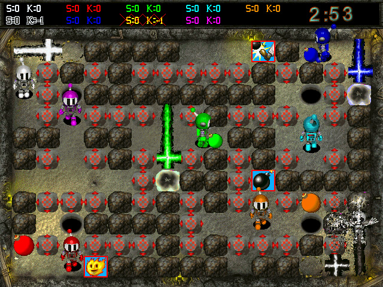

Содержание
|
Я проработал программистом в крупной международной компании в Москве ни много ни мало 8 лет, а до этого ещё около 8-и лет работал системным администратором в Кемерово. Мой московский опыт принёс мне много знаний и умений, но в то же время и разочарование. Разочарование пришло наверное потому, что структура крупного офиса со штатом около ста человек не давала мне нужной свободы и в то же время качество общепринятых стандартов оставляло желать лучшего, с чем мне приходилось ежедневно мириться. Вобщем увольнение из той компании было как освобождение. Но, с другой стороны, финансовая свобода и возможность общения с интересными людьми, а также с увлечёнными высококлассными специалистами (конечно, и такие там были) -- это то, чего я лишился.
Что же я могу сказать про свою собственную степень увлечённости? Навереное, её теперь нет... Не знаю, почему -- может быть из-за московского офиса, а может быть потому что просто вырос. С детства я был сильно увлечён компьютерами -- MS DOS 3.0, потом 3.3, ковыряние autoexec-а, коробки 5-дюймовых дискет с игрушками, с которыми я таскался по школе... Мне хотелось проникнуть в самую глубину всего -- и на Бейсике программировал, и Си изучал, и книгу по Ассемблеру читал. А как только встретил книгу по архитектуре 386-го процессора, тут же стал её изучать (хотя она меня жутко вгоняла в сон). Потом появился Linux, я был одним из первых в городе, у кого был Debian на 4-х CD. Ну вот, так это всё закрутилось, завертелось.
Что касается хакерского интереса, то конечно я хотел им быть. Раздобытые с Usenet-а и Fido хакерские мануалы притягивали своей романтикой. А ночи проведённые за SoftICE-ом приносили упоение победой от крупицы нового достижения. Теперь-то я понимаю, что по своим аналитическим способностям, да и в целом по интеллекту я был что ни есть самый середнячок. Но беспрецедентная преданность своему увлечению толкала меня вперёд и давала неплохие результаты. Сначала место в небедствующей торговой фирме, маленькой и уютной, с зарплатой в разы превышающей среднюю по городу. Затем радиосеть из более 100 точек по городу -- рай для трудоголика. Потом Москву...
Теперь у меня нет той самой бескомпромиссной увлечённости. Что дальше? На звонки из Яндекса я смотрю с изрядной долей скепсиса, ещё один московский офис я не потяну. Разрисованные стены и бесплатные, мать их, печенюшки -- кого они хотят этим заманить... Покер? Что-то я не получаю от него того, чего ожидаю, и так может продолжаться ещё лет 10. Юго-Восточная Азия? Да, там есть интересные российские компании и от "офисной тоски" есть шанс увернуться, возможно туда. Но вцелом, я в состоянии неизвестности. А возраст-то уже, так сказать, не предрасположен к рисковым ситуациям. Полжизни прошло, ещё полжизни пролетит, не успеешь и глазом моргнуть!
Содержание
Прежде всего, нужно выбрать внешний вызов (системный или библиотечный), который предположительно используется в интересуемой функции и не используется или используется редко до её вызова. Чаще всего это будет read (ReadFile, ReadFileEx), если функция использует данные из файла либо GetWindowText, если пользователь вводит данные. На этом этапе могут хорошо помочь трассирующие утилиты (Procmon, strace и т.п.).
Встать в отладчике на этот вызов и проверить попадаем ли мы в него при активации интересуемой функции в UI. Если мы попадаем очень часто в этот вызов до активации функции, то значит либо вызов выбран некорректно и нужно выбрать другой, либо если лучших вариантов нет, то отфильтровать по входящим параметрам (например open по имени файла, read по файл дескриптору и т.д.). Либо найти методом бинарного поиска количества пропусков breakpoint-ов, если входящие данные стабильны и число вызовов не меняется.
Также могут быть осложнения, если вызов используется до интересуемой функции. Например, данные считываются в буфер, а затем буфер передаётся интересуемой функции. В таком случае, нужно ставить breakpoint на чтение участка памяти буфера, отслеживать все его копирования и чтения его копий до тех пор, пока эта цепочка не приведёт нас к интересуемой функции.
Итак, мы научились останавливать отладчик при вызове интересуемой функции. Осталось определить на каком уровне стека вызовов она находится (т.к. мы в данный момент в системном вызове где-то в самом низу). Это делается методом анализа пересечений стеков. Сохраняем данный стек, где мы знаем, что интересуемая функция присутствует. И берём другой стек, где мы знаем, что интересуемая функция отсутствует. Второй стек должен быть максимально близкий по времени исполнения к первому. Отбрасываем общую верхнюю часть -- и получаем адрес возврата в интересуемую функцию.
На данном этапе производится поименование переменных и вызовов внутри функции. Это делается на основе следующих данных:
статические строки в коде (например: 'Wins', значит участок кода выводит число побед)
библиотечные и системные вызовы и константы (как правило не утратили читабельные имена)
динамические данные времени исполнения (всегда можно посмотреть в отладчике, какое значение принимает переменная)
метод проб и ошибок: вносим изменения в исполняемый код, например правим условный переход или значение регистра и смотрим изменения в поведении программы.
Не стоит пренебрегать анализом динамики исполнения. Встать в отладчике в изучаемый участок кода и проанализировать данные и стеки вызовов. И так, потихоньку клубок распутывается.
Если вносимые изменения не требуют увеличения размера исполняемого кода, то задача сводится к тривиальной перезаписи участков кода. Если при этом некоторый существующий код упраздняется, то на его месте может быть записан новый код. Если же места под новый код недостаточно, то требуется увеличение секции кода и пересборка исполняемого файла.
Год: 2016 Инструментарий: С++11, POSIX, libev Ссылка на Github: Evoxy
Пример не демонстрирует навыки реверсинга. Однако, это то чем я занимаюсь на данный момент, поэтому стоит его здесь указать.
Программа написана на C++ с использованием элементов 11-го стандарта. Архитектура демона основана на неблокирующихся сокетах и состоит из пула потоков, в каждом из которых запущен цикл событий, обрабатывающий все принятые в данном потоке соединения. Программа работает на преаллоцированной памяти, у каждого потока есть свой пул памяти, аллокация из кучи происходит только на стадии инициализации приложения. Из пула блок памяти берётся при новом соединении и возвращается обратно при закрытии соединения. Вся обработка соединения происходит на статической памяти внутри этого блока. Подробнее об архитектуре приложения можно узнать из описания к моему проекту server-demo.
Текущий статус проекта: основная функциональность RFC 2616 реализована, проект находится на стадии альфа-тестирования. Программа успешно справляется со множеством длинных сhunked запросов через keep-alive соединение.
Год: 2013 Инструментарий: Ida Pro 6.1; Syser 1.99 |
 |
В ходе анализа кода игры Atomic Bomberman были найдены функции, отвечающие за работу основного меню ($main_menu_loop), запуска новой игры ($new_game_options, $new_game_players, $new_game), работу настроек игры ($options_menu, $load_options), а также основные игровые переменные, такие как $newgame_goal_amount, $goal_type, $newgame_theme. Все символы с '$' были разработаны мной в процессе реверсинга, полный их список (73) можно посмотреть в bm95_discovered.map. Заметки по анализу находятся в bomberman.txt.
Год: 2003(?) Инструментарий: SoftICE, etc.
Исправляет требование лицензионного ключа. К сожалению, в этом и более ранних примерах история анализа не сохранялась. Breakpoint ставился на GetWindowText(), который возвращал введённые пользователем данные. Затем происходил долгий и мучительный подъём по стеку (я тогда не анализировал пересечения стеков) до тех пор, пока не был найден условный переход после возврата с уровня, который активно "мурыжил" эти данные. Подправив этот условный переход -- вуаля: "Спасибо, что зарегистрировались!".
#include <io.h>
#include <stdio.h>
#include <fcntl.h>
#include <sys/stat.h>
#include <mem.h>
#define MAXBUF 100
char buf[MAXBUF];
char * filename = "rtsme.exe";
#define FILESIZE 6553600
#define LENGTH 5
char check[LENGTH] = { 0xe8, 0xa6, 0x05, 0xf2, 0xff };
char patch[LENGTH] = { 0x33, 0xc0, 0x40, 0x90, 0x90 };
#define OFFSET 0xe91c8
#define msgh(handle, fmt) fprintf(handle, fmt, filename)
#define err(fmt) msgh(stderr, fmt)
#define msg(fmt) msgh(stdout, fmt)
int main()
{
int f;
struct stat s;
char buf[LENGTH];
printf("ARTiSAN Real-time Studio v4.2.48.0 dirty crack by +....\n");
if ((f = open(filename, O_RDWR))==-1) {
err("Error opening %s!\n");
return 1;
}
fstat(f, &s);
if (s.st_size != FILESIZE) {
err("%s size mismatch!\n");
return 1;
}
lseek(f, OFFSET, SEEK_SET);
read(f, buf, LENGTH);
if (memcmp(buf, check, LENGTH)) {
err("Maybe %s already patched?\n");
return 1;
}
lseek(f, OFFSET, SEEK_SET);
if (LENGTH==write(f, patch, LENGTH)) {
msg("%s successfully patched.\n");
return 0;
}
err("Failed to write %s!\n");
return 1;
}Год: 2002(?) Инструментарий: SoftICE, etc.
Исправляет жалобу программы на плохую лицензию. В этом примере, как и было сказано в описании методики, данные, прочитанные из файла по цепочке перекладывались с места на место.
#include <stdio.h>
#include <string.h>
#pragma hdrstop
const char * EXENAME = "SecureCRT.exe";
const size_t OFFSET = 0x48d5f;
#define CHECKLEN 17
typedef unsigned char byte_t;
const byte_t CHECK[CHECKLEN] = {0x84, 0xc0, 0x0f, 0x84, 0x84,
0, 0, 0, 0x8d, 0x4c, 0x24, 0x6c, 0xe8, 0xd6, 0x98,
7, 0};
#pragma argsused
int main(int argc, char* argv[])
{
char buf[CHECKLEN];
FILE * exe = fopen(EXENAME, "r+");
printf ("One byte crack by +.... for SecureCRT 4.1.0.138\n");
if (! exe) {
fprintf(stderr, "Open %s failed!\n", EXENAME);
return 1;
}
fseek(exe, OFFSET, 0);
if (CHECKLEN != fread(buf, 1, CHECKLEN, exe)) {
fprintf(stderr, "Read %s failed!\n", EXENAME);
return 1;
}
if (memcmp(buf, CHECK, CHECKLEN)) {
fprintf(stderr, "Check %s failed!\n", EXENAME);
return 1;
}
fseek(exe, OFFSET, 0);
fprintf(exe, "\x32");
fclose(exe);
printf ("0x32 written at 0x%x.\
Now all protocols work with all these 4.0 licenses you can find on astalavista\
and usenet. Enjoy!\n", OFFSET);
return 0;
}
Год: 2002
Пример демонстрирует возможность вторжения в адресное пространство процесса. Основано на статье от +z0mbie.
//---------------------------------------------------------------------------
#include <iostream>
#include <windows.h>
#pragma hdrstop
using namespace std;
//---------------------------------------------------------------------------
#pragma argsused
int main(int argc, char* argv[])
{
LPCTSTR app = "<path to EXE>";
STARTUPINFO i = {0};
i.cb = sizeof(STARTUPINFO);
i.lpDesktop = "WinSta0\\Default";
PROCESS_INFORMATION p;
bool res = CreateProcess(app, NULL, NULL, NULL, TRUE,
NULL, NULL, NULL, &i, &p);
if (!res) {
DWORD e = GetLastError();
char msg[50];
FormatMessage(FORMAT_MESSAGE_FROM_SYSTEM, NULL, e, 0x419, msg, 49, NULL);
cout << "Process creation error: "<<msg<<"\n";
return 1;
} else {
cout << "Process created. About to change context: press any key... ";
getchar();
}
CONTEXT tc;
res = GetThreadContext(p.hThread, &tc);
if (!res) {
cout << "GetThreadContext: error\n";
return 1;
}
res = SetThreadContext(GetCurrentThread(), &tc);
if (!res) {
cout << "SetThreadContext: error\n";
return 1;
}
WORD b = *(int *)0x40569d; // type interesting address inside EXE
cout << "All is well "<< b << "\n";
getchar();
return 0;
}
//---------------------------------------------------------------------------